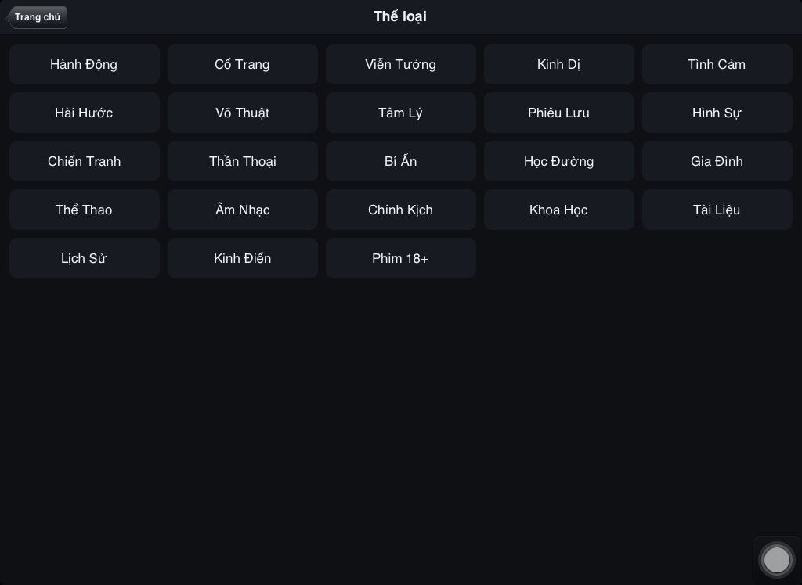
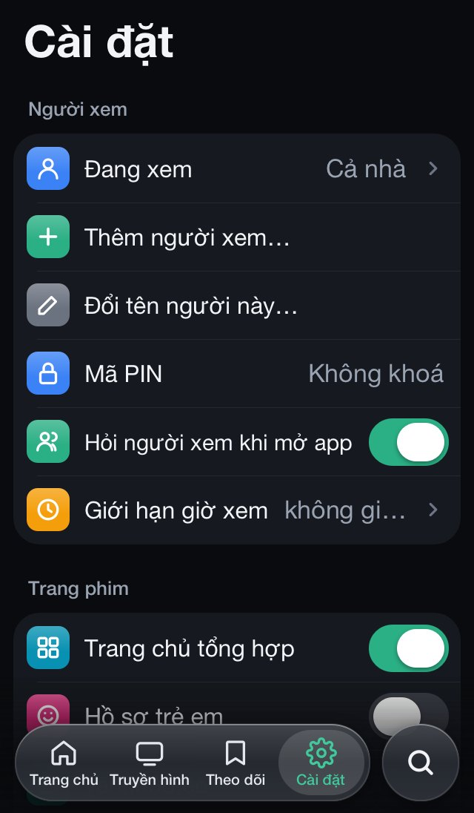

iPhone, iPad đời iOS 6 không còn cài được app xem phim nào. Côn Bằng TV Legacy viết riêng cho chúng: gom phim từ nhiều trang về một trang chủ, phát bằng chip giải mã của máy nên 1080p vẫn mượt, đồng bộ lịch sử với tivi và các máy khác trong nhà — và tự cập nhật.
Mở trang này bằng Safari trên iPhone / iPad đã jailbreak rồi bấm Thêm vào Cydia — hoặc xem cách cài.
Bản mới nhất ở GitHub Releases
Miễn phíKhông tài khoản, không quảng cáo của app.
Mượt trên máy cũPhát bằng chip giải mã của máy — 1080p vẫn mượt trên iPhone 5, iPad mini.
Tự cập nhậtCó bản mới là app hỏi, bấm một nút là cài, giữ nguyên lịch sử.
Mã nguồn công khaiAi cũng xem được app làm gì, trên GitHub.
Cài đặt
Cài một lần, các bản sau tự lên.
Máy cần đã jailbreak (có Cydia). Cách dễ nhất: thêm nguồn Cydia của app rồi bấm Cài — làm ngay trên iPhone / iPad, không cần máy tính.
Cách 1 — Cydia khuyên dùng
Trên iPhone / iPad, mở trang này bằng Safari rồi bấm Thêm vào Cydia. Hoặc trong Cydia: Nguồn → Sửa → Thêm, gõ:
https://conbangtvlegacy.github.io/repo/
Chờ Cydia tải nguồn xong, tìm Côn Bằng TV, bấm Cài đặt → Xác nhận.
Mở «Côn Bằng TV» trên màn hình chính, đọc và đồng ý phần miễn trừ trách nhiệm — thế là xem được.
Cách 2 — tệp .deb
Tải tệp .deb. Bấm Tải bản mới nhất trên máy tính (Safari của iOS 6 thường không mở được GitHub nữa).
Chép sang máy và cài. Máy có OpenSSH (cài trong Cydia) thì trên máy tính chạy, thay IP-máy bằng địa chỉ Wi-Fi của iPhone / iPad (Cài đặt → Wi-Fi → ⓘ):
scp vn.conbangtv.legacy_*.deb root@IP-máy:/tmp/
ssh root@IP-máy "dpkg -i /tmp/vn.conbangtv.legacy_*.deb && su mobile -c uicache"
Hoặc chép tệp vào máy (iTunes / iFunBox / AirDrop của jailbreak), mở bằng iFile hay Filza rồi chọn Cài đặt; chưa thấy biểu tượng thì khởi động lại màn hình chính (respring).
Mật khẩu SSH mặc định của máy jailbreak là alpine — nên đổi bằng lệnh passwd (cả tài khoản root lẫn mobile) để người cùng mạng Wi-Fi không vào được máy.
Các bản sau: tự cập nhật
Mở app là app tự kiểm tra bản mới trên GitHub (tối đa vài giờ một lần). Có bản mới thì hiện hộp «Có bản mới» kèm những thay đổi chính; bấm Cập nhật: app tải về, kiểm tra tệp, cài đè rồi tự mở lại sau vài giây — lịch sử, người xem và cài đặt giữ nguyên.
Kiểm tra tay: Cài đặt → Phiên bản. Đang xem phim thì app không hỏi giữa chừng. Cài bằng Cydia thì bản mới cũng hiện trong mục Thay đổi (Changes) của Cydia.
Cần gì
iPhone, iPad hoặc iPod touch chạy iOS 6 (6.0 – 6.1.6), đã jailbreak (vd p0sixspwn, evasi0n).
Khoảng 25 MB trống và Wi-Fi.
Không cần tài khoản, không cần máy tính để dùng hằng ngày.
Tính năng
Đủ như bản trên tivi, gọn cho màn hình nhỏ.
Dùng chung «bộ não» với Côn Bằng TV trên tivi, Windows, Linux: cùng cách đọc trang phim, cùng trang chủ tổng hợp, cùng đồng bộ — chỉ khác lớp giao diện viết lại cho iOS 6.
Một trang chủ, nhiều nguồn phim
Phim mới từ các trang gom về một chỗ, phim trùng gộp làm một («3 nguồn»), xếp theo thứ bạn đang xem dở.
Phát mượt, bỏ quảng cáo chèn
Video phát bằng trình phát gốc của iOS, giải mã phần cứng tới 1080p. Đoạn quảng cáo chèn giữa phim (HLS) được cắt bỏ trước khi phát.
Chọn tập ngay khi đang xem
Nút ☰ Tập mở lưới mọi tập (đổi được Vietsub / Thuyết minh), tập đã xem mờ đi. Nhớ chỗ đang xem, tự chuyển tập sau.
Có tập mới là biết
Bấm Theo dõi một lần. Phim có tập mới lên hàng «Có tập mới» ở đầu trang chủ, nút «☆ Theo dõi» ghi số phim mới.
Một ô tìm cho mọi trang
Gõ tên phim có dấu hay không dấu; app hỏi cùng lúc mọi trang, kết quả chia theo từng trang.
Mỗi người một hồ sơ
Lịch sử riêng, khoá mã PIN, hồ sơ trẻ em chỉ có hoạt hình hợp tuổi, giới hạn giờ xem và giờ đi ngủ bằng mã PIN phụ huynh.
Xem dở ở tivi, xem tiếp trên iPad
Đồng bộ trong nhà với Côn Bằng TV trên Android TV, Windows, iPad mới, Mac, Linux: lịch sử, chỗ đang xem, phim theo dõi.
Vào được cả khi bị chặn
DNS mã hoá và vượt chặn nhà mạng có sẵn; thêm proxy SOCKS5 / Shadowsocks (dán link ss://) cho ai cần.
Điểm IMDb, thể loại, quốc gia
Nhãn điểm IMDb trên ảnh phim, mục «Điểm IMDb cao», lọc theo thể loại và quốc gia ngay từ đầu trang chủ.
Trang chủ
Mở app là thấy đúng phim mình hay xem.
Hàng Có tập mới và Xem tiếp luôn ở đầu: chạm là phát tiếp đúng chỗ.
Dải nút trên cùng: ☆ Theo dõi, ★ Điểm IMDb cao, Thể loại, Quốc gia và danh mục của trang.
Gợi ý Giống «phim vừa xem», theo thể loại bạn hay xem; phim có ở nhiều trang chỉ hiện một lần.
Trang nào chậm hay lỗi thì dùng bản đã lưu, không bắt cả trang chủ chờ.
Xem phim
Chọn tập, đổi server mà không thoát ra.
☰ Tập: lưới mọi tập, tập đang xem viền vàng, đổi bản Vietsub / Thuyết minh.
Server: app tự chọn server phát được trên iOS 6 và nhớ server chạy tốt; video lỗi thì chọn server khác, xem tiếp đúng giây.
Chạm đúp nửa trái / phải để tua lùi / tới; chụm hai ngón để vừa / lấp đầy màn hình.
Tự nhớ chỗ đang xem từng tập, xem hết thì sang tập sau.
Trang phim
Xem tiếp, theo dõi và phim liên quan.
Nút Xem tiếp: Tập … hoặc Xem từ tập đầu, nút Theo dõi, danh sách tập — tập đã xem có màu riêng.
Thông tin phim kèm điểm IMDb và số lượt chấm.
Cuối trang: các hàng phim liên quan — cùng bộ, cùng thể loại, cả từ trang khác.
Tìm phim hay
Điểm IMDb cao, thể loại, quốc gia.
★ Điểm IMDb cao: phim lẻ, phim bộ, hoạt hình… xếp theo điểm IMDb; hồ sơ trẻ em chỉ thấy phim hợp tuổi.
Thể loại / Quốc gia: lưới nút theo danh sách đầy đủ của trang (KKPhim…).
Ô tìm hỏi mọi trang cùng lúc, kết quả chia theo trang.

Người xem và trẻ em
Mỗi người một hồ sơ, trẻ em có chế độ riêng.
Tối đa 8 người xem, mỗi người một lịch sử, Xem tiếp, phim theo dõi; mở app hỏi «Ai đang xem?».
Khoá từng người bằng mã PIN 4 số.
Hồ sơ trẻ em: trang chủ chỉ có hoạt hình hợp tuổi; tắt cần mã PIN phụ huynh (nếu đã đặt).
Giới hạn giờ xem mỗi ngày và giờ đi ngủ; hết giờ phim dừng, người lớn nhập mã để cho xem thêm 15 / 30 / 60 phút.

Máy hỗ trợ
iPhone, iPad đời iOS 6.
App dựng cho chip armv7 và iOS 6.0 trở lên. Đã chạy thật trên hai máy dưới đây; các máy cùng đời còn lại dự kiến chạy được — dùng thử thấy lỗi thì báo giúp.
Xem dọc, phim tự xoay ngang. Máy chưa thử mà chạy được hay gặp lỗi thì báo giúp để ghi vào đây.
iPad
iPad mini 1 · iOS 6.1.3 — đã thửiPad 2iPad 3iPad 4
Giao diện ngang / dọc đều được, lưới phim nhiều cột hơn, chữ lớn hơn.
iPod touch
iPod touch 5iPod touch 4
Như iPhone. Cần Wi-Fi.
Máy đời mới hơn
iPad, iPhone chạy iOS / iPadOS 15 trở lên, Android TV, điện thoại Android, Windows, Mac, Linux: dùng Côn Bằng TV bản chính. Các máy đồng bộ được với nhau.
Đồng bộ trong nhà
Xem dở ở tivi, mở iPad xem tiếp.
iPhone / iPad iOS 6 ghép được với Côn Bằng TV trên tivi, máy tính và iPad mới cùng mạng Wi-Fi: lịch sử xem, chỗ đang xem từng tập, phim theo dõi, người xem và danh sách trang phim. Không có máy chủ ở giữa.
Trên tivi (hoặc máy kia) mở Đồng bộ trong nhà — màn hình hiện mã ghép 4 số.
Trên iPhone / iPad: Cài đặt → Đồng bộ trong nhà, chọn tên máy kia trong «Máy trong mạng» rồi nhập mã. Không thấy tên thì chọn Nhập địa chỉ và mã ghép… và gõ địa chỉ IP của máy kia.
Xong. Từ đó hai máy tự đồng bộ khi mở app, khi xem xong phim và vài phút một lần lúc app đang mở.
iOS 6 tạm dừng app khi ra màn hình chính, nên máy kia chỉ gửi sang được lúc app đang mở — mở app là tự lấy dữ liệu mới.
Nói trước
Những gì iOS 6 không làm được.
Server chỉ có trình phát nhúng
Vài server của trang phim chỉ là trang web nhúng trình phát (streamfree, NguonC…) — trình duyệt của iOS 6 quá cũ để chạy. App tự bỏ qua và chọn server có luồng video thật (KKPhim, VSMOV…).
Cần jailbreak
Apple đã ngừng mọi cách cài app chưa duyệt lên iOS 6, App Store cũng không còn app nào chạy được. Gói .deb cài qua Cydia / dpkg nên máy phải đã jailbreak.
Không có hình trong hình
iOS 6 chưa có phát thu nhỏ (hình trong hình): ra màn hình chính là phim tạm dừng, mở lại app là xem tiếp đúng chỗ.
Quyền riêng tư
Không tài khoản, không theo dõi.
App không có máy chủ riêng và không biết bạn xem gì.
Dữ liệu nằm trên máy bạn
Lịch sử, người xem và cài đặt chỉ lưu trên từng máy; đồng bộ trong nhà gửi thẳng giữa các máy trong mạng Wi-Fi. Mật khẩu proxy cất riêng, không đồng bộ, không gửi đi đâu.
Chỉ kết nối nơi cần
Các trang phim bạn chọn; GitHub để kiểm tra bản mới; dịch vụ DNS mã hoá (tắt được). Không gắn công cụ thống kê hay quảng cáo.
Cập nhật có kiểm tra
Bản mới chỉ tải từ GitHub của dự án, kiểm mã SHA-256 trước khi cài. Công cụ cài (quyền root, cần để cài gói) chỉ nhận đúng gói của app.
Hỏi đáp
Câu hỏi thường gặp.
Máy chưa jailbreak cài được không?
Không. iOS 6 chỉ cài được app chưa qua App Store khi đã jailbreak. Máy iOS 6.1.3 – 6.1.6 jailbreak bằng p0sixspwn, iOS 6.0 – 6.1.2 bằng evasi0n (cần máy tính). Jailbreak là việc của bạn — hãy sao lưu máy trước.
App có mất phí, có quảng cáo không?
Miễn phí, không tài khoản, không quảng cáo của app. Đoạn quảng cáo chèn giữa phim trong luồng HLS được app cắt bỏ; quảng cáo nằm sẵn trong các trang phim thì app không hiển thị trang web nên cũng không thấy.
Video không phát hoặc báo lỗi?
Chạm vào video cho hiện nút, bấm Server và chọn server khác — app nhớ server nào chạy được cho lần sau. Phim mà mọi server chỉ có trình phát nhúng thì iOS 6 không phát được (xem Những gì iOS 6 không làm được); tìm phim đó ở trang khác bằng ô tìm kiếm.
Trang phim không vào được?
Thường là nhà mạng chặn. DNS mã hoá và vượt chặn đã có trong Cài đặt → Mạng; vẫn không được thì đổi trang phim khác trong Cài đặt → Trang phim, hoặc dùng proxy SOCKS5 / Shadowsocks.
Cập nhật app thế nào?
Không cần làm gì: mở app là app tự kiểm tra, có bản mới thì hỏi; bấm Cập nhật là app tải, cài và mở lại. Kiểm tra tay ở Cài đặt → Phiên bản. Đã thêm nguồn Cydia thì cập nhật trong Cydia cũng được. Bản cài trước 0.4.0 chưa có tự cập nhật — cài bản mới một lần bằng Cydia hoặc tệp .deb.
Không thấy biểu tượng sau khi cài bằng tệp .deb?
Chạy su mobile -c uicache qua SSH, hoặc khởi động lại màn hình chính (respring) bằng Cydia / SBSettings. Đừng chạy uicache lúc app đang mở.
Có an toàn không?
Mã nguồn công khai trên GitHub, ai cũng xem được app làm gì. Máy jailbreak nên đổi mật khẩu SSH mặc định (alpine) bằng lệnh passwd. App chỉ là trình xem: không lưu trữ, không tải lên, không phát tán phim.
Báo lỗi, góp ý ở đâu?
Nhóm Telegram t.me/tivikit, hoặc mục Issues trên GitHub — ghi rõ máy, bản iOS và phim gặp lỗi.
Lấy lại chiếc iPad cũ để xem phim.
Miễn phí. Không tài khoản, không công cụ theo dõi.